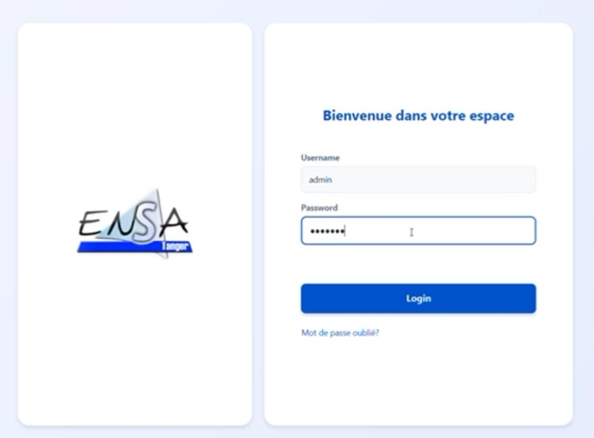

Système de Gestion d'une École
une application de gestion d'une école permettant d'administrer les étudiants, professeurs, modules, et inscriptions. Cette application utilise Java, JavaFX, et JDBC pour gérer les données dans une base de données relationnelle et offrir une interface graphique intuitive.

üöÄ Fonctionnalit√©s Cl√©s
- üìã Ajouter, modifier et supprimer des √©tudiants.
- üë©‚Äçüè´ Rechercher des √©tudiants par nom, num√©ro de matricule ou promotion
- üìä Afficher la liste des √©tudiants avec leurs informations
- üìÜ Gestion des professeurs
- üíº Gestion des modules
- üìë Gestion des inscription
- üîî Statistiques sur l'√©cole
- üí¨ Interface utilisateur (JavaFX)
- üíº Exportation des donn√©es(pdf / csv)
üõ†Ô∏è Technologies Utilis√©es
JavaFx
Java
JDBC
MySQL
FXML